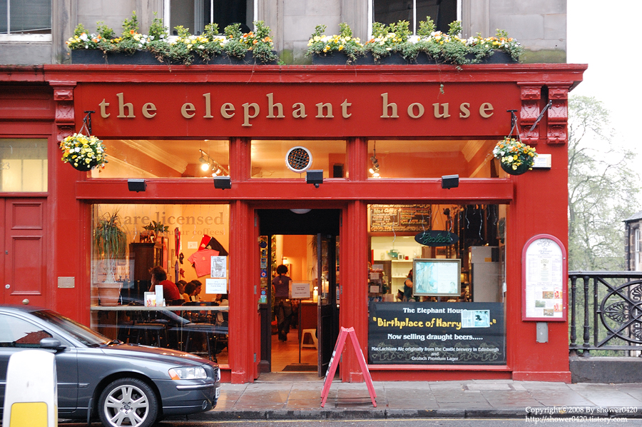

현재 시간을 계산하여 한국과 영국 날짜를 비교해보세요!
달력 :
※ 대한민국 시간은 영국 시간보다 9시간 빠릅니다.
(영국 시간으로 금요일 오후 6:28이면, 대한민국 시간으로 토요일 오전 3:28입니다.)
| 1. 디 엘리펀트 하우스 카페 | 2. 옥스퍼드 크라이스트 교회 | 3. 킹스크로스 역 |
|---|---|---|
|  | ||
| 21 George IV Bridge, Edinburgh EH1 1EN 영국 | St Aldate's, Oxford OX1 1DP 영국 | Euston Rd, Kings Cross, London N1 9AL 영국 |
| 조앤 K 롤링의 첫 해리포터 집필 장소 | 해리포터 퀴디치 경기장 촬영지 | 9와 3/4 승강장 촬영지 |